Briar hook polearm
candidate · future concept
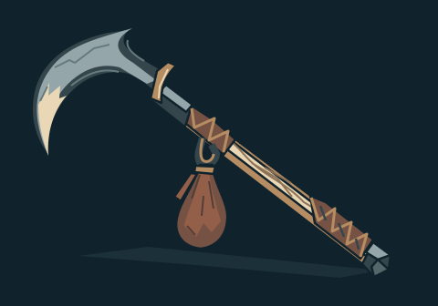
Strong recurved hook and diagonal shaft; quiet ground shadow. Counterweight becomes a small secondary droplet at compact size. Useful concept, no runtime acceptance.
Editable SVGART WORKSHOP · OPTIONAL SOURCE STUDIES
38 native SVG concepts: 18 Emberwake equipment/skill studies and 20 Night Passage patron-sanctum props/plates. Author review: 26 candidates, 11 with caveats and one held coal-tongs study. No accepted canon, supported runtime slot or automatic game selection.
Seven successful sequential calls, no failures/retries; US$0.970265 estimated, zero uncertainty/reservation for this saved suite. This is usage-based estimation, not billing.
Scope and temporary import recipe · Canonical study index · Validation and limits
Enlarged/native/compact contact sheet · Exact packed original · Prompt, settings, usage and lineage
candidate · future concept

Strong recurved hook and diagonal shaft; quiet ground shadow. Counterweight becomes a small secondary droplet at compact size. Useful concept, no runtime acceptance.
Editable SVGcandidate-with-caveat · future concept
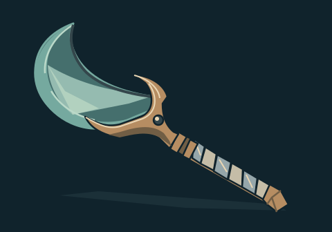
Broad crescent and fitted socket read clearly. Pale layered planes suggest smoky glass but retain an opaque illustrated quality; no physical glass-rendering claim.
Editable SVGcandidate · future concept
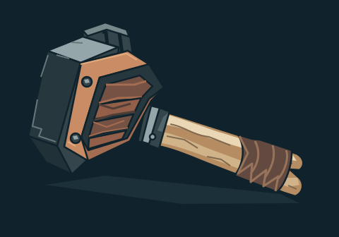
Heavy head, attached split handle and broad copper bellows cheek read at compact size; internal slats recede.
Editable SVGcandidate-with-caveat · future concept
Hollow cage, short handle and chain remain identifiable. Small chain junctions are compressed at 80px; hold attachment detail for any future runtime adaptation.
Editable SVGcandidate · future concept
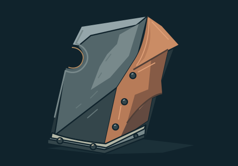
Asymmetric notch and folded copper side plane read immediately; lower rim and grounded thickness survive compact view.
Editable SVGcandidate · future concept
Reed body, strap and three bolt heads stay distinct. Fine lashings recede at compact size; silhouette remains useful.
Editable SVGEnlarged/native/compact contact sheet · Exact packed original · Prompt, settings, usage and lineage
candidate · future concept
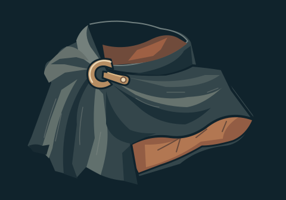
Open neckline, swept folds and warm lining read well at 80px. Clasp remains a supported closure; quiet broad fabric planes.
Editable SVGcandidate-with-caveat · future concept
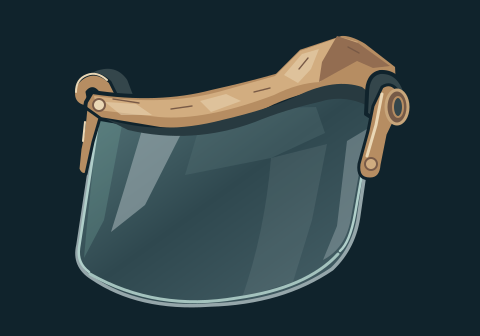
Glazed pane and two fitted hinge supports read clearly. Glass is conveyed by broad reflection/transmission shapes, not physically transparent rendering.
Editable SVGcandidate · future concept
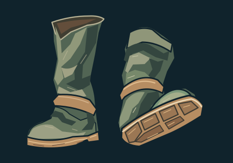
Distinct planted/tilted boots with sole exposure and moss leather folds. Measured top bound is 31.42px within the requested 30px margin; visual concern about tight padding was resolved by source-size bounds check. No fit adaptation needed.
Editable SVGcandidate · future concept
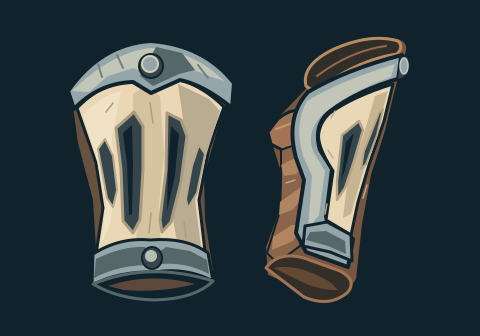
The paired front/side views have real open lining and clear slotted plates; distinct from full arms or gloves.
Editable SVGcandidate · future concept
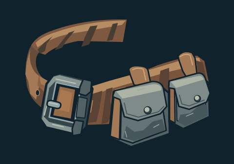
Large buckle, C-curved strap and two fitted pouches read at native and compact sizes; strap notches are secondary.
Editable SVGcandidate-with-caveat · future concept
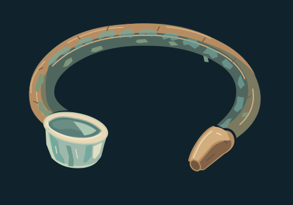
Open ring and asymmetrical ceramic cup terminal are distinct. Fine edge chips recede; still reads as a thick torc rather than a medallion.
Editable SVGEnlarged/native/compact contact sheet · Exact packed original · Prompt, settings, usage and lineage
candidate-with-caveat · future concept
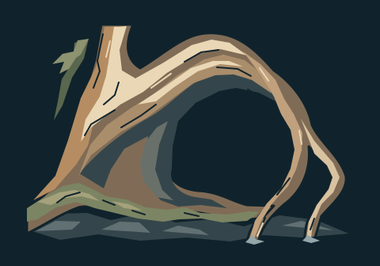
Strong inward root gesture and clean empty central pocket. The upper trunk terminates flat inside the composition; a purposeful continuation crop would need review before final art.
Editable SVGcandidate · future concept
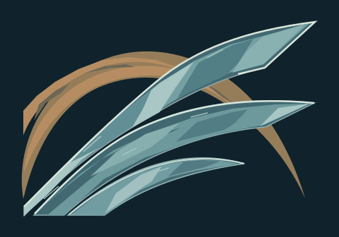
Three unequal broad blades form a clear rising sweep, with restrained dust arc and coherent glass-edge planes. Tiny striations recede at compact size.
Editable SVGcandidate · future concept
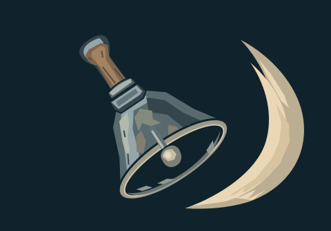
Tilted bell, clapper and large separated pressure crescent clearly indicate a directional burst without concentric target rings.
Editable SVGcandidate-with-caveat · future concept
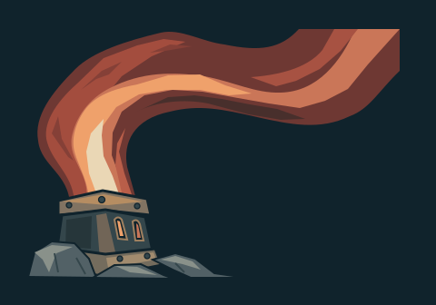
The rising heat ribbon and small vent read at compact size. The upper-right ribbon finishes with a flat graphic cut; retain as a force/material concept, not finished VFX.
Editable SVGcandidate · future concept
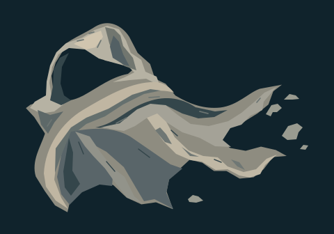
Empty folded mantle has a clear hollow hood and trailing dissolution, broad ash planes and restrained fragments; no living body is implied.
Editable SVGcandidate · future concept
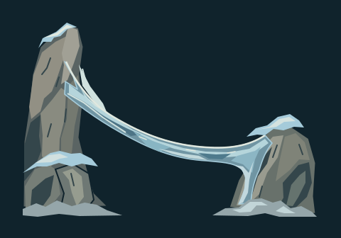
Supported stone anchors, taut curved ice strip and distinct cold planes read as a connected bridge/tether at both study sizes.
Editable SVGEnlarged/native/compact contact sheet · Exact packed original · Prompt, settings, usage and lineage
candidate · future concept
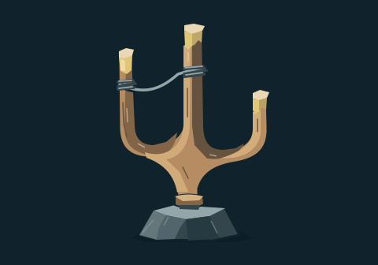
Unequal bronze prongs, wire bridge and connected slate foot give a clear instrument silhouette; the wire recedes at compact size.
Editable SVGcandidate · future concept
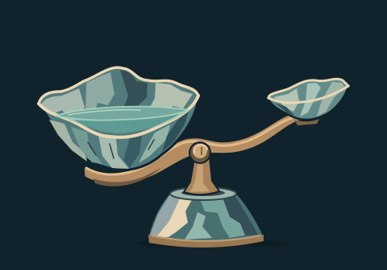
Unequal shell bowls, curved load-bearing beam and central pivot read as a balance rather than a wave symbol. Broad aqua meniscus keeps water distinct from the ceramic rim.
Editable SVGhold · future concept
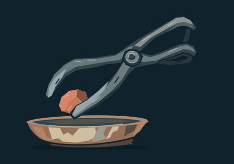
The pivot and tool contour are readable, but the coal appears supported by only the lower jaw while the other jaw misses it; suspended action is structurally ambiguous. Retain this concept on hold, no reroll or runtime suitability claimed.
Editable SVGcandidate-with-caveat · future concept
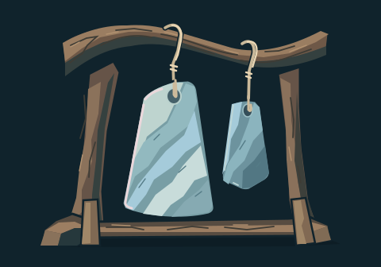
Unequal ceramic slabs and suspended cords read clearly at native size. At 80px the thin cords recede, though the chime frame remains recognizable.
Editable SVGcandidate · future concept
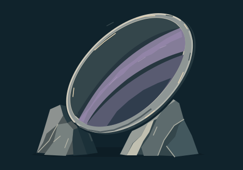
Tilted oval, dark reflection bands, thin silver bevel and split stone support distinguish a physical mirror from the existing eye mark. Quiet plum planes remain legible.
Editable SVGEnlarged/native/compact contact sheet · Exact packed original · Prompt, settings, usage and lineage
candidate · future concept
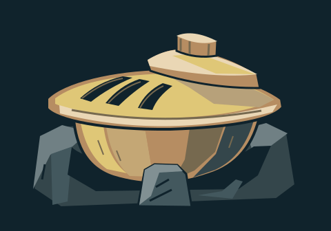
Offset stepped lid, broad slots and stone cradle make a compact solid offering vessel. Warm broad planes stay readable without repeating the bolt mark.
Editable SVGcandidate-with-caveat · future concept
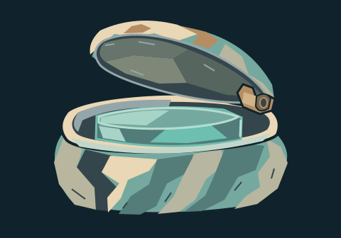
Supported hinged lid, hollow rim and aqua insert read at native/compact sizes. Exterior planes lean toward stone rather than glazed ceramic; material remains a proposal.
Editable SVGcandidate · future concept
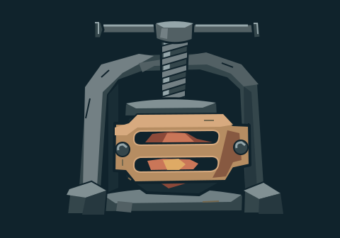
Screw, connected frame, slotted copper cheek and recessed coal read clearly. Strong supported construction distinguishes it from an existing brazier or furnace monument.
Editable SVGcandidate · future concept
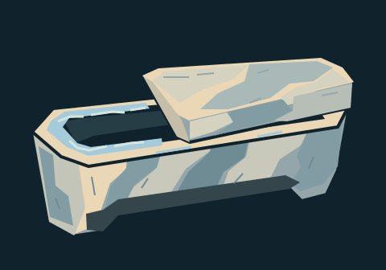
Sliding thick lid, open dark cavity and icy rim establish a distinct long casket. Broad pale surfaces stay legible; fine frost is intentionally subordinate.
Editable SVGcandidate-with-caveat · future concept
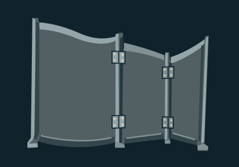
Unequal panels, feet and actual hinge positions are clear at compact size. The returned panels are gray and rigid rather than the requested plum cloth; useful screen construction study, not a finished patron-material match.
Editable SVGEnlarged/native/compact contact sheet · Exact packed original · Prompt, settings, usage and lineage
candidate · future concept
Angled slate, fitted rotating pointer and open triangular support read as a working desk; connected bronze base and restrained light separate large planes.
Editable SVGcandidate-with-caveat · future concept
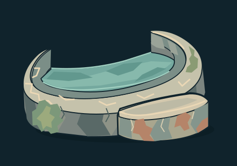
Crescent basin, attached step and shallow aqua surface are clear. The stone-like mosaic exterior is stronger than the requested glazed ceramic material; no fluid simulation is implied.
Editable SVGcandidate · future concept
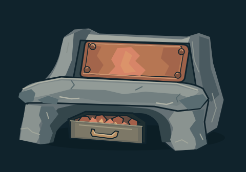
Heavy seat, supported legs, copper back plate and recessed coal drawer create a readable low warming bench, distinct from arena furnace monuments.
Editable SVGcandidate · future concept
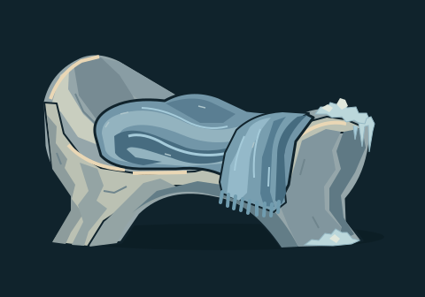
Curved stone support, open arch beneath and folded blue wool give a calm intimate prop. Small frost and fringe recede naturally at compact size.
Editable SVGcandidate · future concept
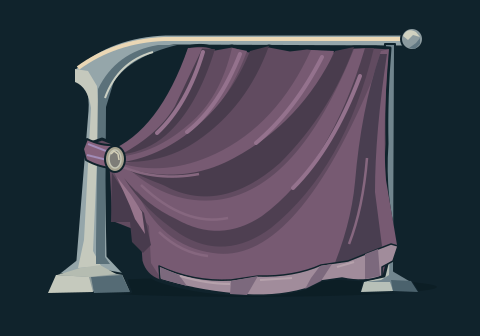
Offset rail, weighted plum drape, supported feet and visible folds read as cloth furniture. This resolves plum/cloth identity more clearly than the earlier rigid screen study; both originals remain retained.
Editable SVGEnlarged/native/compact contact sheet · Exact packed original · Prompt, settings, usage and lineage
candidate · future concept
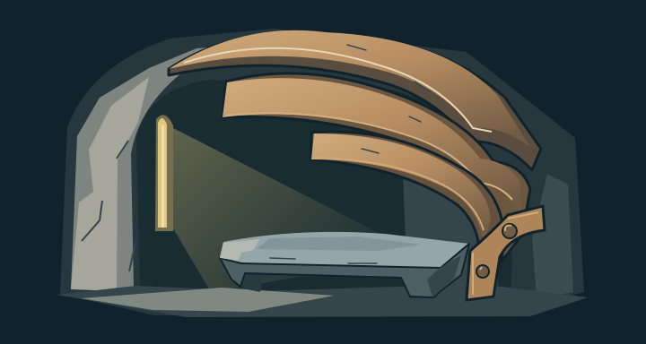
Three asymmetric acoustic hood planes shelter a single ledge; a thin gold slit and broad diagonal light plane establish a quiet interior at 360×192 and 180×96.
Editable SVGcandidate · future concept
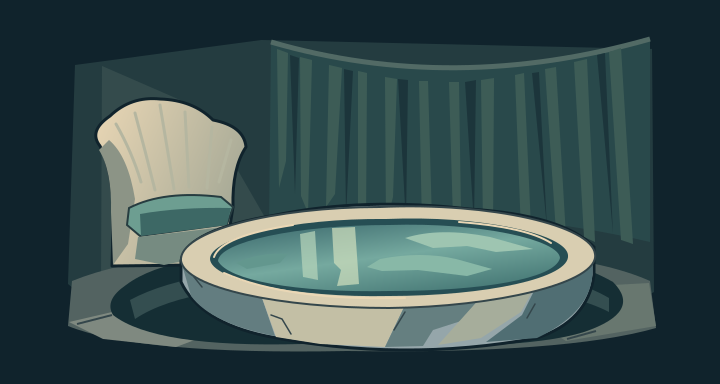
Water reflection, shell-backed seat, low table rim and reed curtain remain distinct at both sizes. The scene composes a social recess rather than an arena or patron symbol.
Editable SVGcandidate-with-caveat · future concept
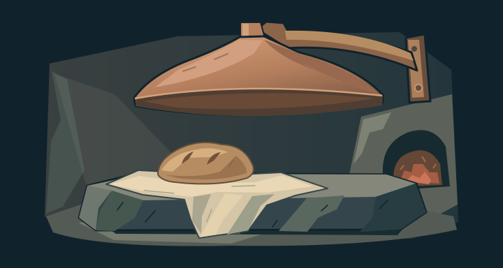
Supported copper canopy, low slab and folded linen form a clear warm interior. The clay loaf-shaped votive can read as ordinary bread; material identity needs a later art decision, with no canonical ritual implied.
Editable SVGcandidate · future concept
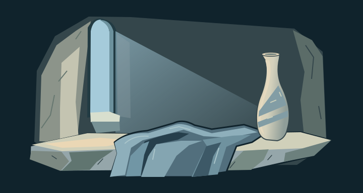
Off-center cold window, pale ledge, elongated vessel and blue blanket form three quiet value groups. Window light and folds remain clear at compact plate size.
Editable SVGcandidate · future concept
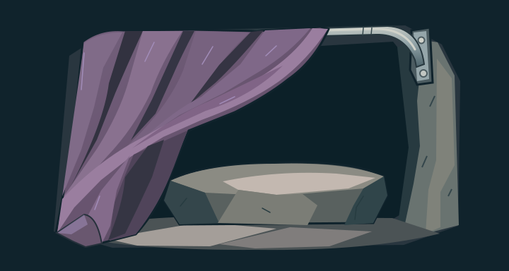
The diagonal plum curtain frames a grounded empty seat and dark recess. Fitted rail mount and broad stone planes stay readable; no guardian, gateway action or established lore is implied.
Editable SVG